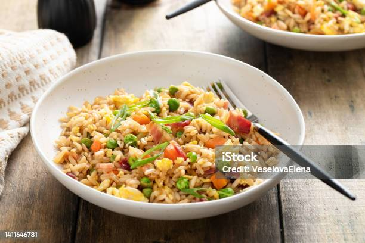

Fried Rice

Fried rice is cooked rice that is stir fried in a hot, oiled pan with eggs, aromatics, and vegetables until the grains are hot, separate, and lightly toasted. The dish traces back to China, with records dating to the Sui dynasty. Yangzhou later became associated with one of its best-known styles. The Chinese name, chao fan, translates directly as stir fried rice. Source: Panlasang Pinoy
Ingredients
- Cold Leftover Steamed White Rice
- Eggs
- Cooking Oil
- Onion
- Garlic
- Ham
- Soy Sauce
- Pepper
- Sesame Oil
- Green Onions
- Salt
Steps for Cooking Fried Rice
- Prepare The Rice. Place the cold rice in a large bowl. Use your hands or a fork to gently separate any clumps, then set the rice aside. Work gently here so you loosen the grains without crushing them. Crushed rice releases starch and turns pasty later in the pan.
- Scramble the Eggs. Heat 1 tablespoon of cooking oil in a wok or wide frying pan over medium high heat. Pour in the beaten eggs, scramble until just set, then transfer them to a clean plate. Poll the eggs off the heat while they still look a little underdone. They finish cooking when they go back into the hot rice at the end.
- Cook The Ham and Haromatics. Add another tablespoon of oil to the same pan. Add the ham, if using, and cook for 1 to 2 minutes or until the edges begin to brown. Add the onion and white parts of the green onions, then stir fry for 2 minutes. Add the garlic and continue cooking for about 20 seconds.
- Fry and Season the Rice. Increase the heat to high and add the remaining tablespoon of oil. Add the rice, spread it across the pan, and let it sit for a few seconds before tossing. Continue stir frying for 4 to 5 minutes, breaking up any remaining clumps. Pour the soy sauce around the inner edge of the hot pan instead of directly over the rice. Add the white pepper and toss until the seasoning is evenly distributed. Add the scrambled eggs. Continue cooking for 2 minutes, or until the rice is lightly toasted. Turn off the heat. Add the toasted sesame oil and the green parts of the green onions, then toss everything together.
- Taste and Serve. Taste the rice and add salt only if it needs it. Transfer to a serving plate and serve while warm. Share and enjoy!